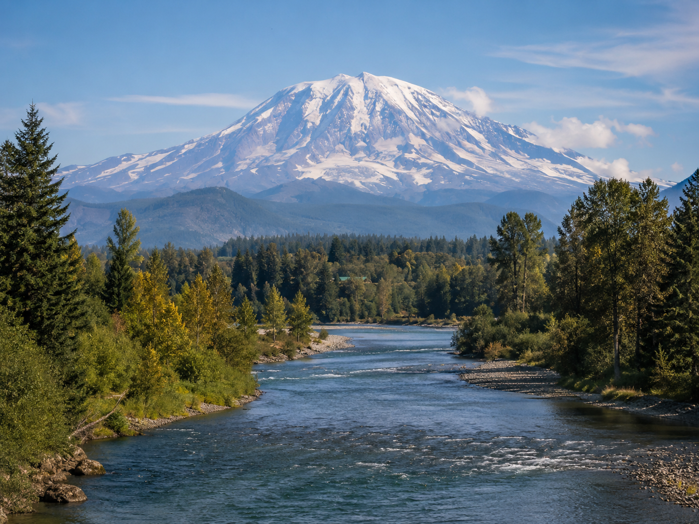

The Generous People
For thousands of years before European contact, the Puyallup Valley was home to the spuyaləpabš — the Puyallup people. The neighboring Yakama Tribe called them the generous people, a name that reflected both their welcoming spirit and the extraordinary abundance of their homeland.
They lived in permanent cedar longhouses along the banks of the Puyallup River, sustained by salmon runs, camas roots, wapato, berries, game, and the deep forests of fir, cedar, and alder that once covered this valley. Tahoma — what settlers would call Mt. Rainier — watched over everything.
In 1854, the Medicine Creek Treaty — signed under deeply problematic circumstances — displaced the Puyallup people from most of their ancestral lands. The Puyallup Tribe has fought ever since to reclaim their rights, including fishing rights and land claims. Today the Puyallup Tribe of Indians is a sovereign nation and a major force in Pierce County.
Volcanic Soil, Glacier Water
The Puyallup Valley was shaped by geology as much as by human hands. Ancient eruptions from Tahoma sent mudflows down the Carbon and Puyallup Rivers, depositing the rich alluvial soil that defines the valley floor.
European settlers arrived in the 1850s and quickly recognized what the Puyallup people had always known — this land was extraordinarily generous. Hops, berries, bulbs, flowers, and vegetables all became part of the valley's agricultural story.
The Washington State Fair, the Daffodil Festival, bulb farms, berry farms, and the WSU Research and Extension Center all grew from this valley's remarkable fertility.
Growing Forward
Much of Pierce County's farmland has been lost to housing and commercial growth. The land that remains is precious because soil like this cannot simply be recreated.
We grow here with full awareness of that history — the generosity of the Puyallup people, the fertility of volcanic soil, the work of generations of farmers, and the urgent need to keep growing food on land made for it. Every tomato planted is a small act of continuity.
The place behind the growing.
A few images from the local growing season: Tahoma, tomato starts, garden work, and the valley landscape that shapes this project.



Tahoma
Mt. Rainier is visible from across the valley. Its glaciers feed the rivers and help shape the valley's water and fertility.
Salmon
The Puyallup River once ran thick with salmon — the foundation of Puyallup culture for thousands of years.
Berries
Strawberries, raspberries, and blackberries became signature crops of the valley after the hop era.
Bulbs & Flowers
Daffodils, tulips, and dahlias are celebrated each spring through the valley's floral traditions.
Our Tomatoes
Specialty tomato varieties are growing in the valley's volcanic soil, part of this season's learning and food project.
Washington State Fair
Since 1900, the fair has celebrated the agricultural community of the Puyallup Valley.